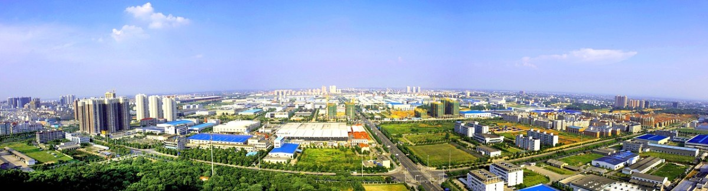
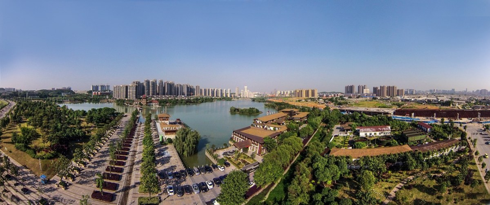

若要选一座兼具古韵底蕴与鲜活烟火的城市，长沙必定榜上有名。这座坐拥三千年建城史的星城，依偎湘江之畔，既有千年文脉沉淀的儒雅风骨，又有热辣鲜活的市井气息，山水、人文、美食交织，成为无数人奔赴的湘式浪漫。
长沙历史源远流长，自古便是楚文化、湖湘文化的核心腹地。春秋战国时期隶属楚国，历经朝代更迭，始终是中南地区的文化与商贸重镇，素有"屈贾之乡"的美誉。西汉贾谊在此留居，写下千古名篇，为长沙镌刻下厚重的文学印记。近代以来，长沙更是英才辈出，沉淀出"心忧天下、敢为人先"的湖湘精神，红色底蕴深厚，无数风云故事在此流传，让这座古城兼具风骨与热血。
从人文地理来看，长沙地处湖南东部、湘江下游，坐拥得天独厚的自然格局。三面环山、一江穿城，岳麓山静立城西，湘江蜿蜒穿城而过，橘子洲静卧江心，山水洲城融为一体，构成独一无二的城市地貌。温润的气候滋养出繁茂绿植，也造就了长沙温润又热烈的城市气质。这里交通四通八达，老街与新城交融，古老麻石街毗邻繁华商圈，传统湘文化与新潮都市风碰撞共生，韵味十足。
Top Attractions
山水藏胜景，步步是风光 — 长沙的景区兼容自然雅致与人文厚重。
Yuelu Mountain & Aiwan Pavilion (岳麓山 · 爱晚亭)
城市天然氧吧，山林清幽、古木参天，无需门票即可入园。山中爱晚亭位列中国四大名亭，秋日红枫似火，层林尽染，是千古打卡盛景。
Yuelu Academy (岳麓书院) — Thousand-Year Academy
山巅的岳麓书院作为千年学府，书香绵延千年，飞檐黛瓦间尽是中式文脉底蕴。Built in 976 AD during the Northern Song Dynasty, it is one of the four great academies of ancient China and still functions as part of Hunan University today.

Orange Isle (橘子洲) — Changsha's Icon
长沙城市名片，四面环江、风光开阔。32米高的青年毛泽东艺术雕塑巍然矗立，江风拂面，远眺湘江浩荡，沉浸式感受"指点江山，激扬文字"的壮阔意境。

Taiping Old Street & Chaozong Street (太平老街 · 潮宗街)
潮宗街、太平老街等百年古街，保留着老长沙的烟火底色，青石板路、老巷古宅，藏着城市最质朴的岁月痕迹。
Hunan Provincial Museum (湖南省博物院)
马王堆汉墓文物静静陈列，诉说着千年楚韵文明。Home to the world-renowned 2,100-year-old Lady Dai mummy and exquisite Han Dynasty silk paintings — a must-visit for history lovers.
Changsha Cuisine — The Soul of Hunan
逛遍山水人文，最不能错过的就是热辣地道的长沙美食，每一口都是专属星城的烟火滋味。
Changsha Stinky Tofu (长沙臭豆腐)
城市美食名片。外皮炸得金黄酥脆，内里软嫩多汁，戳开灌入蒜蓉剁椒酱汁，闻臭吃香、一口爆汁，风味独特。Try the classic black version (黑色经典) — it's crispier and more approachable for first-timers.
Sugar Oil BaBa (糖油粑粑)
软糯香甜的糖油粑粑是本地人从小吃到大的小吃，金黄油亮、甜而不腻，趁热吃软糯香甜，治愈所有疲惫。
Chili Fried Pork (辣椒炒肉)
硬核湘菜代表。费大厨辣椒炒肉鲜香下饭，烟火气十足；炊烟小炒黄牛肉鲜嫩入味，是地道湘味灵魂。Simple yet explosive with smoky wok-hei — the ultimate rice-killer.
Spicy Crayfish (口味虾) — Summer Night Essential
夏夜标配的口味虾红彤彤、香辣过瘾，肉质Q弹紧实，搭配清爽解腻的紫苏桃子姜，完美中和辣味，解锁长沙地道逛吃体验。
Travel Tips
Best Time to Visit
Spring (March-May) and autumn (September-November) offer the most pleasant weather. Autumn is especially stunning with Yuelu Mountain's maple foliage. Summer is hot but rewards you with the legendary night market and crayfish season.
Getting Around
- Metro: Changsha Metro connects all major attractions
- Ride-hailing: Didi and taxis are affordable and widely available
- Walking: Taiping Street, Pozi Street, and Wuyi Square are all within strolling distance
- Airport: Changsha Huanghua International Airport (CSX), high-speed rail hub to Beijing/Shanghai/Guangzhou/Shenzhen
Local Secrets
- 橘子洲灯光秀免费，每晚不容错过, walk along the Xiang River promenade at sunset for the best views
- 最好吃的臭豆腐去坡子街 (Pozi Street)
- 岳麓山免门票，建议清晨前往避开人流
- For breakfast, find a random noodle shop (粉店) for authentic Changsha rice noodles — the greasier the shop looks, the better the noodles
- Night markets start after 9 PM — don't show up at 6 PM expecting the full buzz
🌶️ Spice Warning
The spice is real. Changsha food is genuinely hot — not the watered-down version you find elsewhere. If you can't handle heat, say "bù yào là" (不要辣) clearly. But be prepared for a puzzled look — you're in Hunan, after all.
一半千年文脉，一半市井烟火。
长沙不只有网红的热闹，更有沉淀千年的温柔与风骨。
山水藏诗意，烟火暖人心 — 这就是独一无二的星城，值得每一个人奔赴相遇。